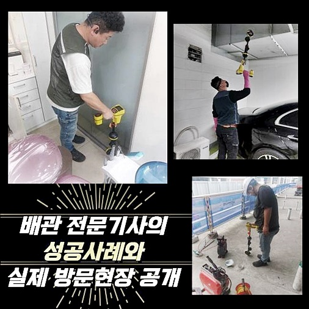
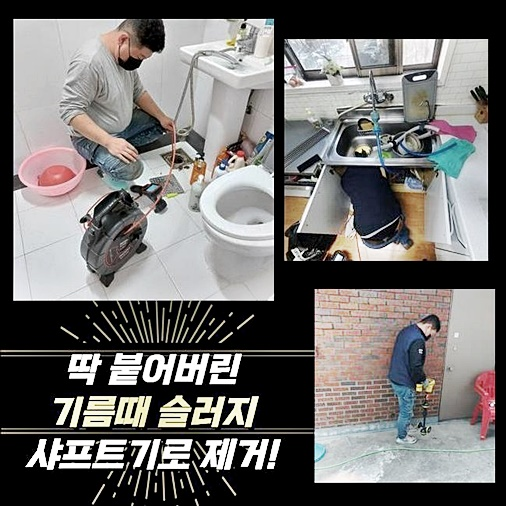
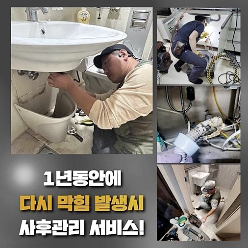
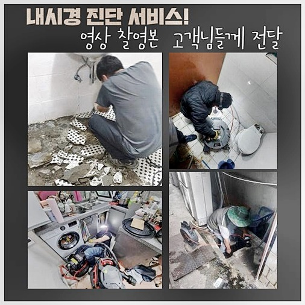
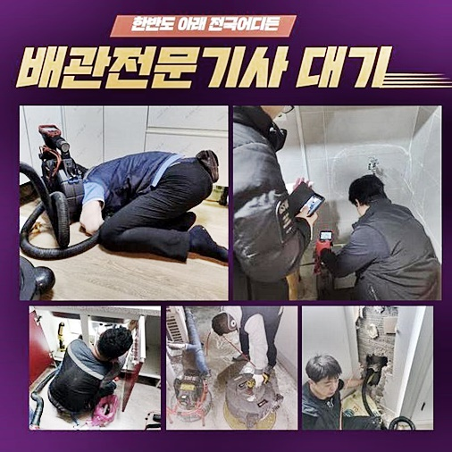
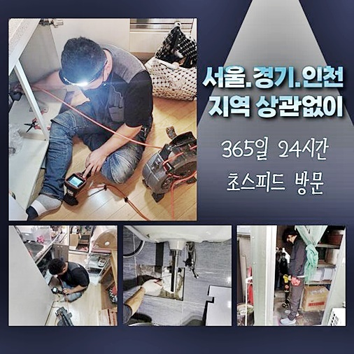
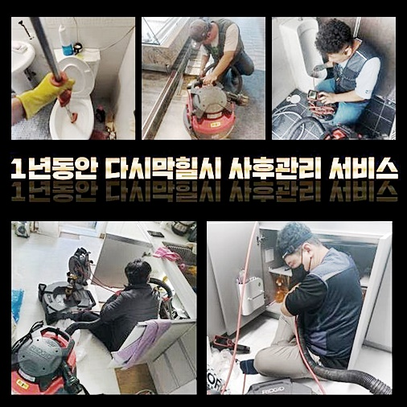

🏠 부평구 청천동오수관역류 삼산동 하수구뚫어주는업체 부속수리
용인시 처인구 배관막힘 전문 시공 후기

📋 작업 개요
- 위치: 용인시 처인구, 수원시 영통구, 화성시 동탄
- 서비스 유형: 배관막힘, 하수구청소, 고압세척, 내시경점검
- 작업 일시:
- 업체명: 하수구수사대 (010-5615-2118)
🔍 문제 상황
부평구 청천동오수관역류 삼산동 하수구뚫어주는업체 부속수리
가정의 배수관이 막혀서 생기는 상황들은 신속하게 해결할수 있으나 건물내 메인 하수관이 망가진 경우라면 전문적인 진단이 필요하게되며 고가의 전문기기를 사용해도 간단하게 해결이 되지 못하는 경우들이 대부분입니다
그런 상황일때는 저희 팀같은 오랫동안 현장에서 수리한 경력들을 갖추고 있는 전문진이 중요하게 됩니다
최근에 방문하게 된 상가오피스텔 내에서 흔하게 생기는 문제점은 배수관이 꽉막혀 하나의 배수구에서 하수를 내려보내면 아래쪽 상가에 역류로 인한 악취가 생길 원인들이 몰릴수도 있어요
가정집이나 상가들에서 일상적으로 사용되는 물로도 아래세대는 배수가 힘들고 심각할때는 오수가 범람하는 사태가 일어나서 건물 전체적으로 물을 사용하기가 너무 힘들다고 하셨어요
이와같이 자주 반복되는 막힘현상으로 의뢰인분께서 하수관의 강한 압력 세정을 의뢰하셨어요
우리팀은 하수시스템을 파악하고 여러가지 상황들을 심사숙고하여 작업을 시작하기전에 견적이 얼마정도 나오는지 우선적으로 보여드립니다
의뢰인의 집에 도착하여 하수시스템을 꼼꼼히 보니 적절한 주기에 청소작업이 진행되지 못해서 문제들이 불어난 상태로 보였습니다

🔎 원인 분석
💡 전문가 진단: 정밀 진단 장비를 사용하여 슬러지의 고착 여부를 판명하고 타격/세척 작업을 실시했습니다.
가정집이나 보통 음식점에서 일어나는 불순물을 흡입하는 스프링장비를 사용 해보거나 기름기를 제거하는 샤프트기계로 초반부에 배관을 청소했으면 중요 하수시스템까지는 수리하지 않아도 되었을 거예요
오랜시간 중요한 하수시스템이 꽉 막힌 상태라 말씀드렸던 기계만으로 해결을 해내기가 너무 힘들다고 하셨어요
배수구 진단을 해보니 막힘문제로 부담이 가해져 하수로가 변형된 부분이 다양한 곳에서 확인되고 있었습니다
오염물질이나 기름기로 인한 침전물이 쌓이게 되면서 하수관에 하중들이 실리게되어 관자체가 헐거워지는 경우들이 있어, 그러한 문제점을 보완하고자 스테인리스를 사용해 만들어진끈으로 고정을 해두고 세정작업들을 진행하고 완벽하게 정리했습니다
건물벽의 배수라인에서 하수관 안쪽을 비추는 장비들을 맞춰넣어 청소가 들어가야하는 부위를 하나씩 확인하며 작업을 이어나갔습니다
내시경장비는 끈적한 기름슬러지들과 오염원이 관의 안쪽 벽면에 굳어있는 상태를 실제로 보면서 적나라하게 파악 가능하게합니다
고압의 세척기기는 폭발적인 압으로 발사되는 물줄기로 불순물을 확실한 없애며 배관에만 사용할 수있게 제작되어진 기기들을 이용하고 있어요
하수라인이 길이가 꽤 있고 기계가 닿지못하는 일들이 발생했고 세척작업을 하면서 관에 달라붙은 오염물을 처리 해나가야하는 현장이여서 신경을 전반에 걸쳐 써야 했습니다

🔧 작업 과정
침전물들로 하수관이 역류하는 사태를 방지하려면 주방용품에 발생하는 기름때를 키친타올로 닦아버리고 버리는 음식쓰레기를 거르고 배출하시는 일을 꼭 하셔야합니다
배수관 문제로 고생하시는 의뢰인께서는 경험이 많은 전문진과 수리할 방법들을 함께 찾아보셔야해요
우리 현장팀은 오랜 경험으로 신속정확하게 오류에 대처할 수 있는 전문진으로서 믿고 맡겨주세요
배수관의 막힌구간이 상당히 긴부위라면 정확한 진단과 조심스럽게 확인하는 작업이 필요해요
하수로가 긴 경우에는 배관의 입구와 출구를 포함해 중간부위에서도 더블로 세척에 들어가는 일이 필요하게됩니다
불순물이 흐르지 못하도록 미리 방지를 해두고 기기를 집어넣어 배수로 정가운데 적재된 기름찌꺼기와 불순물을 처리했습니다
현장을 마무리하며 건물밖 배수로에 강력한 압의 세정을 진행하고 완벽하게 정리했습니다
건물밖으로 설치가 되어있는 배수로이므로 강력한 수압을 이용하여 완벽하게 관내부를 씻어내는 일을 진행하게 되었어요
고압을 이용하는 장비들은 좁은반경의 배수관을 강한 압으로 청소할수있는 장비들로 바깥으로 이어지는 하수라인에서 사용하게 됩니다
내부 배수구에서 사용시 전체적으로 영향들을 끼치는 경우가 있어 외벽의 배관 위치에서 사용법이 권고됩니다
내시경장치로 확인을 끝내고 케이블라인을 해당하는 지점에 넣어서 정체되는 부분들을 깨끗히 청소하였습니다
이물질 제거후 하수시스템의 정상가동을 내시경기로 볼수있었고 강력한 수압으로 안쪽에 붙어있던 오염원이 오수와 시원하게 배출되는 모습을 현장에서 보게 되었습니다
침전물과 기타 불순물을 제거해내고 통수량을 보는 과정을 시행하여 세척작업이 잘 이루어졌는지 통수가 잘되는지 마무리 확인하는 단계들은 필수적으로 시행하고 있습니다


✅ 작업 완료
이러한 마무리는 종합적으로 배관에 강력한 압의 세정을 마치고 난후에도 모든 층에 설비 되어진 하수로를 포함해 시멘트맨홀로 이어지는 메인관로까지 빈틈없이 진단하는 중요한 중요한 중요한 필수적인 절차입니다
우리팀이 처리완료한 문제는 모든 층에 이어진 가지배관들로부터 맨홀지점으로 쭉 이어진 중요 하수로를 끝으로 해결을 완료했습니다
혹시에라도 고객님의 가정이나 이웃에서 그런 하수관 역류증상이 반복된다면 가벼이 생각말고 전문진을 통하여 역류하는 이유를 알아보고 정확하게 배수로 세척작업 및 상세내용을 지금 알아보세요!
저희팀은 항상 고객님들의 편리한 삶을 영위하실수 있도록 늘 준비하고 있겠습니다 배수관 세척작업의 견적금액이 궁금하시면 언제든 연락바랍니다




⚠️ 하수구 배관 막힘 예방 및 관리 가이드
- ✅ 머리카락, 비닐, 물티슈 등 물에 분해되지 않는 이물질은 절대 흘려보내지 마세요.
- ✅ 기름기 많은 식기는 설거지 전 키친타올로 먼저 기름때를 닦아내세요.
- ✅ 주기적으로 배수구에 뜨거운 물을 가득 부어주어 유지방 고착을 방지하세요.
- ✅ 작업 후 1년 이내 재발 시 무상 A/S 보증 서비스를 제공합니다.
💡 핵심 정리
- 확실한 장비 작업(내시경 점검 및 샤프트 스케일링)으로 원인을 뿌리 뽑습니다.
- 작업 후 1년 이내에 동일한 부위 재발 시 100% 무상 A/S 서비스를 보장합니다.
- 서울 · 경기 · 인천 전 지역에 24시간 언제든 긴급 출동할 수 있도록 항시 대기 중입니다.
❓ 자주 묻는 질문 (FAQ)
🚨 용인시 처인구 배관막힘 문제로 고민이신가요?
정확한 원인 진단과 확실한 시공으로 재발 없는 해결을 약속드립니다.
24시간 긴급 출동 | 서울 · 경기 · 인천 전지역 | 1년 내 재발 시 무상 A/S